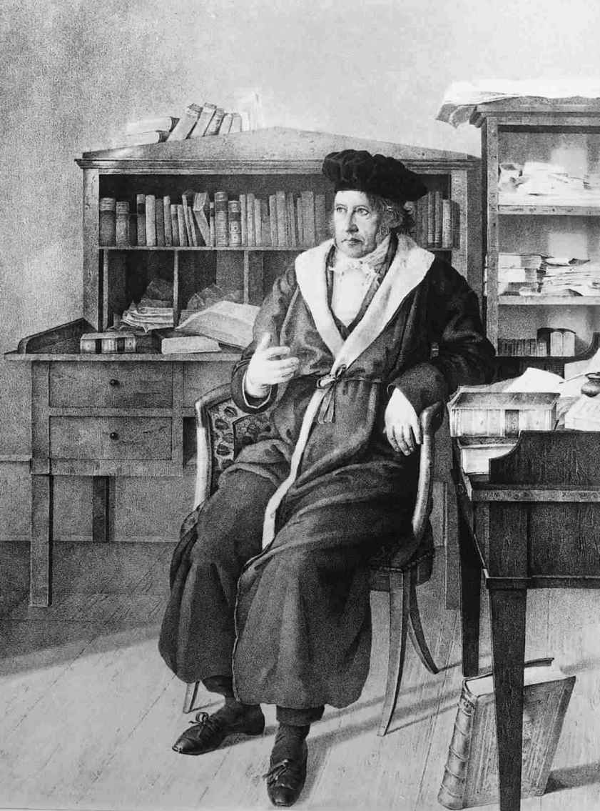
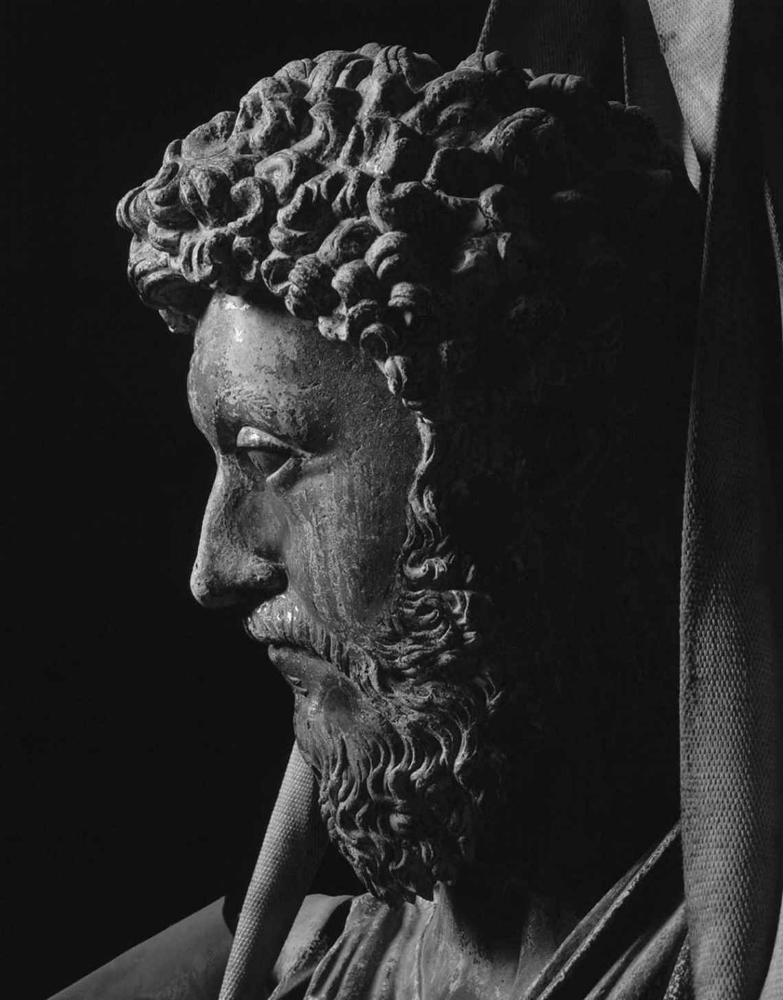

现在我要坦白，我一直在欺骗。到目前为止，我对黑格尔哲学的论述小心翼翼地略去了黑格尔本人反复谈到并认为至关重要的东西：Geist（精神）的概念。它是如此关键，以至于黑格尔说：《历史哲学》的整个目标就是要认识“精神”在历史中的指导作用。因此，如果不了解这个概念，我们就只能部分地把握黑格尔的历史观。在《法哲学原理》中，“精神”的概念也如影随形。比如黑格尔把国家称为“客体化的精神”。因此，前面的章节之所以有意误导读者，我唯一的理由就是这样做有一个好处，可以方便读者逐渐进入黑格尔那奇诡而又往往模糊不清的思想世界。
对英语读者而言，黑格尔的Geist概念首先有翻译上的困难。在德文中，这是一个非常普通的词，但它有两种迥然不同但却相关的含义。这是用来意指“心灵”（mind）的标准语词，即区别于我们身体的心灵。例如精神病是Geisteskrankheit，其字面意思是“心灵疾病”。然而，Geist还能意指“精神”（spirit）这个英语词所表达的各种含义。于是，“时代精神”是der Zeitgeist，而基督教三位一体——圣父、圣子、圣灵中的第三个要素圣灵是der Heilige Geist。在某些段落，黑格尔对这个词的用法很像我们对“心灵”一词的使用，另一些语境则像“精神”，还有一些场合，他的用法同时包含这两种含义，这使翻译者的任务变得更加艰巨。
在这种绝境下，翻译者有三种选择：要么完全使用mind，要么完全使用spirit，要么视语境选用最恰当的词。我反对第三种做法，因为对黑格尔来说，他所谓的Geist是同一种东西，这显然是至关重要的，尽管出现在其各种作品中的是Geist的不同方面。我在开始写这本书时曾打算使用spirit一词，因为近来几乎所有翻译黑格尔的人都选择了这个词。然而随着我更深入地尝试以一种可以让初学者理解的方式来阐述黑格尔，我越来越相信，对英语读者来说，使用spirit一词乃是对“Geist在黑格尔那里的真正含义”这个问题未经详察而预作判断。在英语中，除了“时代精神”和“协作精神”等一些特殊用法，spirit还不可避免地有着宗教或神秘意味。一个spirit在显灵板上敲打出讯息，或者萦绕着荒芜的哥特式宅邸。spirit是一种脱离身体的、幽灵般的存在，是那种除非你有点迷信才会相信的东西。如果持有一种冷静清晰的科学世界观，你就不会相信它。
也许在考察黑格尔时，在某些方面我们将不得不说，他的哲学是建立在这种有些迷信的世界观基础之上的。黑格尔本来正是想用Geist概念来指这样一种脱离身体的、幽灵般的存在。但我们绝不能从一开始就假设这一点。黑格尔是一位在西方哲学传统中进行研究的哲学家，该传统中的哲学家总是非常关注心灵或意识的本性及其与物理世界的关系。笛卡尔通过追问自己能够完全确知什么而开辟了近代哲学时代。他的回答是，尽管他可能正在做梦，或者被一个恶魔所欺骗，从而自己的几乎一切信念都是错误的，但有一件事情他可以确定地知道，那就是“我思故我在”。在这一点上我不可能被欺骗，因为要想被欺骗，我仍然必须存在。然而，这个“我”是什么呢？它不是我的物理身体——在这方面我可能被欺骗。我所确知的这个“我”仅仅是一个思想着的东西，换句话说就是心灵。由此论点产生了后来西方哲学关注的一些核心问题：我的思想和感受是如何与我的身体相联系的？是否既存在着思想那样的心灵对象，又存在着身体那样的物质对象？如果是这样，这两种如此不同的东西又是以何种方式相互作用的？我的大脑是物质的东西，物质如何可能有意识？哲学家把这一系列问题称为“心—身问题”。还有一些问题也可以追溯到笛卡尔，它们集中于认识问题：我们如何可能知道世界是什么样子？我们能否确信自己的思想无论如何都是某个“外在实际”世界的反映，就像我们往往认为的那样？倘若我的全部意识经验，包括为了获得简单信念——比如我面前这张纸的存在——而需要的对颜色、形状和质地的感觉，都始终在我的心灵中，那么我如何可能认识处于我意识之外的世界的任何东西呢？
离题去讨论西方哲学传统的问题是为了说明，像黑格尔这样的哲学家撰写关于心灵的著作是完全可以预料的。他这样做并不意味着他相信有脱离了肉体的灵魂存在，或者有持科学世界观的冷静清晰的人不会相信的某种东西存在。因此，至少在开始讨论黑格尔的意思时，我们不要把他所说的Geist理解成在谈论某种特殊的神秘存在，而要看成对长久以来关于心灵本质的哲学争论的贡献。于是在本书中，我回到上一代黑格尔翻译者的做法，把Geist译为mind。 [1] 随着研究的深入，我们将会弄明白到底应该在什么意义上来理解黑格尔的这个概念。
迄今为止，我对黑格尔观点的介绍是极不完整的，这可以从前面讨论黑格尔历史哲学时被搁置的一个问题看出来，即为什么世界历史不过是自由意识的进步呢？这个问题需要有一个回答。黑格尔明确否认，历史的方向是某种幸运的偶然（无论如何，这与他的整体思路完全不一致）。黑格尔断言，历史上的事情是必然发生的。这是什么意思呢？这如何可能是真的？黑格尔的回答是，历史之所以就是自由意识的进步，是因为历史就是精神的发展。在《历史哲学》中，黑格尔并没有打算解释这一思想，因为他已经出版了一部极为冗长晦涩的著作，以表明精神如此发展的必然性，这就是《精神现象学》。卡尔·马克思把它称为“黑格尔哲学的真正诞生地和秘密”。另一些人则被它750页晦涩难懂的文字所吓倒，甘愿不去理睬它所包含的无论什么秘密。然而，任何关于黑格尔的论述都不能堂而皇之地无视它的存在。
关于这本书，显然应从它的标题谈起。《牛津英语词典》告诉我们，“现象学”意指“关于现象的科学，区别于关于存在的科学”。如果我们熟悉“现象”与“存在”的区分，这些就不难理解。而对于不熟悉的人，这本词典也颇有助益地告诉我们：“现象”在其哲学用法中是指“感官或心灵直接注意到的东西，一种直接的知觉对象（区别于实物或自在之物）”。为了说明这里所作的区分，我们可以考虑呈现于我视觉中的月亮和实际的月亮之间的不同。它昨夜在我的视觉中显现的是网球大小的一弯银色新月，而它实际上当然是一个直径几千公里的岩石球体。银色的新月就是现象。因此，现象学研究的是事物显现给我们的方式。
如果现象学研究的是事物显现给我们的方式，我们也许会猜想，《精神现象学》研究的将是精神显现给我们的方式。这样一种猜测是正确的，但还需要补充一个典型的黑格尔式的转折。研究精神如何显现给我们时，我们只可能研究它如何显现给我们的精神。这样一来，精神现象学实际上研究的是精神如何显现给它自己。因此，黑格尔的《精神现象学》追踪了意识的不同形式，就好像从内部考察每一种形式，并且表明较为有限的意识形式是如何必然发展成更完善的形式的。黑格尔本人则把他的任务称为“对作为一种现象的知识的阐述”，因为他把意识的发展看成朝向那些更充分地把握实在、最终达到“绝对知识”的意识形式的发展。
在《精神现象学》导言中，黑格尔解释了他为什么认为这种研究是必要的。他从认识问题开始讲起。他说，哲学的目标是“对真正存在之物的实际认识”，或如他带着几分神秘色彩所谓的“绝对”。不过在对“真正存在之物”进行表态之前，我们不妨先停下来反思一下认识本身，即我们如何能够认识实在。在试图获得知识的过程中，我们是在努力把握实在。因此黑格尔说，认识往往被比作我们借以把握真理的工具。如果工具出了毛病，到头来我们可能除谬误以外什么也得不到。
因此我们要从对认识的探究开始。很快我们就被怀疑的忧虑所困扰。假如认识实在就像用某种工具去把握实在，那么很可能会有一种危险，即把工具用于实在将会改变实在，因此我们把握到的东西将非常不同于未受干扰的实在。（正如现代物理学家发现，不可能确定亚原子粒子的速度和位置，因为无论用什么仪器来观测都会干扰它们。）黑格尔说，即使我们抛弃“工具”这一比喻，而把认识当作我们借以观察实在的更为被动的媒介，我们也仍然是在观察“经由媒介的实在”（reality-through-the-medium），而不是观察实在本身。
如果我们借以观察的工具或媒介会产生歪曲的效果，那么要想认识到真实的事态，一种方法就是去发现这种歪曲的性质，并把它所造成的差异减掉。例如观察一根一半放入水中、一半露在外面的木棍，水中的部分看起来是弯曲的。木棍真是弯曲的吗？如果我了解折射定律，从而了解透过水去观察所造成的差异，我就能计算它。减掉这种差异，我就能发现木棍实际是什么样了。我们能否以同样的办法处理认识工具或认识媒介所造成的歪曲效果，从而达到对实在本身的认识呢？
黑格尔说，不行。这种解脱途径对我们来说是不适用的。认识不同于观察。因为就认识而言，哪些东西可以减掉呢？这就好比减掉的不是水使光线发生的弯曲，而是光线本身。没有认识，我们连木棍都不会知晓。因此，如果减掉我们的认识行为，我们将会一无所知。
因此，我们的工具不可能保证我们得到一幅未受干扰的实在图像，我们也不可能通过考虑工具所造成的干扰而更接近实在。那么，我们是否应该接受怀疑论立场，认为不可能真正认识任何事物呢？在黑格尔看来，这种怀疑论自相矛盾。倘若怀疑一切，那为什么不怀疑“我们不可能认识任何东西”呢？不仅如此，我们一直在讨论的这种怀疑论观点有其自身的预设，而这些预设它声称是知道的。其出发点是：有“实在”这样一种东西，认识是我们把握实在的某种工具或媒介。在此过程中，它预设了我们自身与实在或者说绝对之间的一种区分。更为糟糕的是，它理所当然地认为，我们的认识与实在之间是彼此割断的，但同时又把我们的认识当作某种真实的东西来处理，也就是说，当作实在的一部分来处理。因此，怀疑论也是不成立的。
黑格尔简洁地提出了关于认识的某种看法，然后表明它导致了一种无法摆脱也无法忍受的困境。他现在指出，我们必须抛弃所有这些关于认识作为工具或媒介的“无用观念和表述”，因为它们都把认识与实在本身割裂开来。
在整个论述过程中，黑格尔没有提到任何一位哲学家持有他认为必须拒斥的认识论观点。在某种程度上，黑格尔是在批判所有经验论哲学家——洛克、贝克莱、休谟以及其他许多人——所共有的假设。不过所有读者都可以清楚地看出，他的主要靶子是康德。康德认为我们永远无法认识实在本身，因为我们只能在空间、时间和因果性的框架之内理解我们的经验。而空间、时间和因果性并非实在的组成部分，而是我们把握实在所必需的形式，因此我们永远无法认识不依赖于我们认识的事物。
在另一部著作《小逻辑》中，黑格尔的确给出了其对手的名字，并对他作了类似的批判（虽然像是要显示其思想的丰富性，他是以略为不同的论证令人信服地阐明观点的）。这段话很值得引用，因为其结尾的一则类比指出了前进的道路：
此学究的愚蠢之举所带来的教益很清楚。要想学会游泳，我们必须勇敢地跳入激流；要想认识实在，我们必须勇敢地跳入作为我们一切认识出发点的意识之流。唯一可能的认识进路就是从意识向它自身显现的内部去考察意识，换言之就是一种精神的现象学。我们不从那些复杂的怀疑，而是从一种自视为真正知识的简单意识形式出发。然而，这种简单意识形式将会证明自己还达不到真正的知识，于是就发展成另一种意识形式。而后者也将表明自己是不完善的，于是发展成其他某种东西，这一过程将持续下去，直到我们达到真正的知识为止。

图13 身着学位服的黑格尔
《精神现象学》详细追溯了这一过程。正如黑格尔所说，它是“培养和教育意识自身达到科学水平之过程的详细历史”。事实上，在整个历史中出现的那些观念的发展就是这种培养和教育的一部分。于是，黑格尔的《精神现象学》在部分程度上预示了《历史哲学》包含的内容。然而这一次，同样的事件是用另一种方式处理的，因为黑格尔旨在揭示意识的发展过程乃是必然的。每一种意识形式在显示自己达不到真正知识的过程中，都把我们引向了黑格尔所谓的“决定性的否定”（determinate negation）。这并非批评我们的普通认识方法的那些哲学家所捍卫的空洞的怀疑论。从那种空洞的怀疑论出发是无法前进的。而决定性的否定本身就是某种东西。[想想数学中的负号（negation sign）：它产生的不是零，而是一个明确的负数。]这种因为发现一种意识形式不完善而产生的“某种东西”本身就是一种新的意识形式，即意识觉察到之前形式的不完善而不得不采取一种不同的方式来克服它们。于是我们将被迫从一种意识形式走向下一种意识形式，不停地去寻求真正的知识。
因此，《精神现象学》将可以回答前面提出的问题：为什么世界历史不过是自由观念意识的发展史，以及为什么历史上发生的事情都是必然发生的。不过令人难以置信的是，对这个重大问题的回答仅仅是这部著作主要目标的一个副产品，其主要目标是表明真正知识的可能性，从而为哲学的目的——用黑格尔的话来说就是提供“对真正存在之物的实际认识”——充当基础。
《精神现象学》所追溯的这一过程的目标是真正的知识或“绝对”。我们如何才能知道已经达到它了呢？怀疑论的怀疑不是仍然可能提出吗？黑格尔说不可能了，因为“在终点处，认识不必再超越自身……”。换句话说，虽然之前的意识一直不得不承认自己认识的不完善，并努力追求超出其把握能力的更完善的认识，即试图认识“自在之物”，但在这个过程结束时，实在将不再是不可知的“彼岸”。意识将直接认识实在，并与之合一。再没有什么东西要去追求了，那种获得更完善认识的无休止的冲动终将得到满足。
黑格尔给自己制定的任务颇不寻常。从强有力地批判康德（不只是康德，而且是所有那些从一开始就区分了认识主体与被认识对象的哲学家——这意味着自柏拉图以来的几乎所有哲学家）的认识进路开始，黑格尔发展出一种新方法。此方法就是追溯一切可能的意识形式朝着真正的知识这一最终目标的发展。真正的知识并不是对实在显现的认识，而是对实在本身的认识。现在我们就来看看他是如何完成这项任务的。
黑格尔从最原始的意识形式开始谈起，他把这种意识形式称为“感觉经验层面的确定性”，或简称“感性确定性”。他认为，这种意识形式唯一要做的就是把握在任一时刻呈现于它面前的东西。感性确定性仅仅记录下我们感官所接收的材料，是对呈现于我们感官的特殊事物的认识。感性确定性并不试图对感官所获得的原始信息进行整理或分类。于是，当这种意识形式面前出现了一个我们所谓的熟西红柿时，它并不能把它的经验描述成一个西红柿，因为那将是对它所看到的东西进行分类。它甚至无法把这种经验描述为看到了某种又圆又红的东西，因为这些词也预设了某种分类形式。感性确定性只知道当下呈现给它的东西；正如黑格尔所说，它是“这个”的确定性，或“这里”和“现在”的确定性。
感性确定性似乎坚称自己是真正的知识，因为它直接觉察到了“这个”，而没有把一种涉及空间、时间或任何其他范畴的概念框架的歪曲性过滤强加给它。感性确定性直接按照客体本来的样子觉察到了客体本身。但黑格尔表明，宣称感性确定性是知识经不起进一步研究。一旦感性确定性试图说出自己的知识，它就变得语无伦次。“这个”是什么？它可以被分成“这里”和“现在”，但这些词无法给出真相。比如一天深夜，有人问我们“现在”是什么，我们也许会说，“现在是晚上”。假定我们把它写下来——黑格尔说，把真理写下来或保存起来不会使它失去任何东西——那么到了第二天中午，我们拿出已经写下的真理，就会发现（如黑格尔所说）“它已经过时了”。同样，我说“这里有一棵树”，但另一种感性确定性也可以说“这里有一座房屋”。
黑格尔的论证似乎基于对用以传达感性确定性知识之语言的一种不合常情的误解。果真有可能避开这种廉价的把戏来重新表述感性确定性的知识吗？这种把戏并不像我们想象的那样容易避开。例如，从感性确定性的观点来看，我们不可能说“午夜是晚上”或“公园里有一棵树”。这些说法都预设了包括我们时间和空间概念在内的事物的一种普遍秩序。
那么，如何才能表达自我确定的知识呢？黑格尔的观点是，它根本不可能用语言来表达，因为感性确定性是一种纯粹特殊的知识，而语言总是涉及把某种东西归入某个更为一般或普遍的标签。“西红柿”是一个通名，它区分出了一整类对象，而不是单个特殊对象。任何其他语词也是如此。黑格尔之所以抨击“现在是晚上”的真理性，意在表明使用“现在”“这里”“这个”等语词无法表达纯粹特殊的知识。这些语词同样是普遍的东西，因为有不止一个“现在”和不止一个“这里”。于是，感性确定性在试图表达关于纯粹特殊之物的知识时，已经陷入了通名的必然性之中。
黑格尔认为他已经表明，没有普遍概念就不可能有知识。关于他这个论点，有两种可能的反驳值得一提。第一种反驳针对“每个语词都区分出了一类对象而不是一个特殊对象”的规则提出了一个明显例外，那就是专名。“约翰·洛克菲勒”“罗萨·卢森堡”“悉尼歌剧院”以及其他专名的确挑选出了特殊对象。感性确定性难道不能通过赋予每一个“这个”一个专名来描述它的经验吗？
在《精神现象学》中，黑格尔没有理会专名是其语言观的例外这一事实。但我们可以合理地推测一下他将如何来回答，因为他在《逻辑学》中断言，专名是没有意义的，因为它们不指称名称本身以外的任何东西，即不指称任何普遍的东西。我们可以设想他会说，用专名来表达感性确定性的特殊知识，只不过是给人们觉察到的每一个“这个”贴上了无意义的标签。这些标签什么内容也没有传达。
这就把我们带到了第二种可能的反驳。它承认，感性确定性的知识也许无法变成语言传达给别人，但主张它仍然是知识。我们为什么要假定所有知识都能言说呢？神秘主义者就常常声称，神秘体验的真理是无法言说的，却是所有真理中最深刻的。黑格尔说：“把真理写下来不会使它失去任何东西。”但这么一个朴素的说法也许就是远离真理的第一步。我们难道不应在这一点上拦住黑格尔，强调知识的有效性太过纯粹，以至于无法用语词来表达吗？
对于这种反驳，黑格尔必须做出回应，因为它威胁到了其事业的核心。黑格尔并不否认有某种东西无法用语言来表达，但他断言，这“只不过是某种不真实的、非理性的、被径直相信的东西”。我有充分理由自认为知道我的意思，即使我无法言说它。但事实上这并不是知识，而是一种纯粹主观的个人意见。意见并不是知识，只有公之于众才能变成知识。
黑格尔在阐述这一点时，利用了德语词“meinen”（“认为”或“意指”）的多重含义以及与之相关的名词“Meinung”（“意见”）。如果我们不理会这种用双关语做哲学的方式，我们面对的就是一种断言而不是论证了。不过，某种原则上不可言传的东西不可能是知识，这一断言听起来是有道理的。
现在可以评价一下我们对“这种原始的意识形式代表了真正的知识”这一主张所作的分析。我们曾试图说明，这种仅仅把握了任一时刻呈现在它面前的东西的意识能够掌握什么样的知识，但这种努力失败了，因为事实证明，凭借这种意识形式所达到的真相（truths）要么明显是谬误，要么是永远无法表达的某种纯粹个人的东西。无论是哪种情况，这些据称的真相都不能被接受为知识。
这样，感性确定性就证明了自己的不完善。正如黑格尔在其导言中向我们承诺的，这一结果是从内部取得的——也就是说，要想表明感性确定性的不完善，只需照字面接受它的说法，并试图使之变得更加精确。感性确定性并非被一种竞争性的意识形式所击败，它完全是因为自身的不协调而垮台的。同样，如同导言向我们承诺的，这一结果并不仅仅是否定性的。我们由此认识到，关于纯粹特殊之物的知识是不可能的，因此必须把特殊的感觉经验纳入某种形式的概念框架，这一框架从普遍方面对我们的经验进行分类，从而使我们有可能通过语言来交流经验。要想获得知识，我们就不能被动地经验，而必须让我们的心灵在整理感官所获得的信息时发挥更积极的作用。因此，在黑格尔考察的下一种意识形式中，意识试图主动由未加工的感觉经验材料创造出某种统一性和条理性。
从上一节讨论的幼稚的意识形式出发，黑格尔又把意识的发展追溯到两个新阶段，他称之为“知觉”和“知性”。在每一个阶段，意识都比它在前一阶段发挥的作用更积极。在知觉层面，意识根据对象的普遍性质对其进行分类。事实证明这是不够的，因此在知性层面，意识又把它自己的规则强加于实在。黑格尔这里所说的规则是指牛顿的物理学定律以及后来在此基础上建立的宇宙观。虽然牛顿和其他科学家发现的这些定律常被当作实在的一部分，但黑格尔认为，它们仅仅是意识对未加工的感觉经验材料进行分类的一种扩展。正如把这些材料纳入对语言至关重要的普遍范畴使交流成为可能，这些物理学定律也使材料变得更有条理和可以预测。在此过程中运用的“重力”和“力”等概念并非我们看到的实际存在的东西，而是我们的知性为帮助我们把握实在而构造出来的东西。
知性层面的意识并不了解这些构造的性质，它把这些构造当作需要理解的客体。而我们这些追溯意识发展过程的人却能看出，意识实际上是在试图理解它自身的创造物。它把自身当成了它的对象。这意味着意识已经达到了能够反思自身的阶段。这就是潜在的自我意识。随着这一结论的得出，黑格尔《精神现象学》题为“意识”的第一部分就结束了。在接下来题为“自我意识”的部分，黑格尔不再直接研究第一部分所着重关注的认识问题，而是把注意力转向了潜在的自我意识如何发展成为完全明确的自我意识。（当然，这仍然是精神朝着绝对知识阶段发展的一部分。）
黑格尔的自我意识概念很重要，它以不同方式影响了马克思主义和存在主义思想家。黑格尔强调，自我意识不可能孤立存在。要让意识成为它本身的一幅恰当图像，它需要某种对照，需要有一个对象来区分出它自身。只有当我也察觉到某种非我的东西时，我才能察觉到自我。自我意识并不单纯是一种思考其自身问题的意识。
自我意识需要一个在它之外的对象，但这一外部对象也是某种与它本性相异的东西，一种与之对立的形态。因此，自我意识与外部对象之间有一种特殊的爱恨关系。在最传统的爱—恨关系中，这种关系以欲望的形式表现出来。欲望某种东西就是希望去拥有它，不把它整个毁掉，同时将它转化成属于你的东西，从而消除其异己性。
欲望概念的引入标志着黑格尔的关注点从发现真理的理论问题转向了改变世界的实践问题。这里预示了马克思主义者极为重视的“理论与实践的统一”。获得真理不能只靠沉思，而要靠影响世界和改造世界。马克思的墓碑上刻着他《关于费尔巴哈的提纲》中著名的第11个论题：“哲学家们只是用不同方式来解释世界，而关键在于改变世界。”在马克思心目中，黑格尔当然属于那些“哲学家们”当中的一个，而且无可否认，马克思对于改变世界的渴望远比黑格尔激进得多。黑格尔本可以指出，马克思这些话背后的思想可以在《精神现象学》中找到，那就是：具有自我意识的存在发现，要想充分地实现自己，它必须着手改变外部世界，并使之成为自己的东西。
图14 自我意识认出了另一种自我意识？
欲望的出现表明，自我意识需要一个外部对象，但却发现任何外部对象都是对它自身的限制。而欲望某种东西就是不满足，所以用典型的黑格尔的话来说，欲望是自我意识的一种不满足状态。更糟糕的是，自我意识似乎注定永远不会满足，因为如果作为独立客体的欲望对象被取消，自我意识将会毁掉其自身存在所需要的东西。
黑格尔对这一困境的解决方案是：让自我意识的对象成为另一个自我意识。这样一来，每一个具有自我意识的存在都有与之相对照的另一个对象，而此另一“对象”也就不单纯是一个必须被占有，从而作为外部对象被“否定”的对象，而是能够占有自身，从而取消作为外部对象的它自身的另一个自我意识。
如果这看起来很晦涩，请不要担心，黑格尔的文本要更加难懂。评论家伊万·索尔指出，黑格尔在这方面的论点是“极为含混的”。而另一位评论家理查德·诺曼则轻描淡写地处理了这一节，他说：“我发现它的大部分内容无法理解，因此我不会怎么谈它。”黑格尔的核心论点是：自我意识不仅要求某个外部对象，而且要求另一个自我意识。对此的一个解释是，要想看到自己，就需要一面镜子。要想意识到自己是一个具有自我意识的存在，就需要能够观察到另一个具有自我意识的存在，看看自我意识是什么样子。另一种可能的解释是，自我意识只能在社会相互作用的环境中发展。一个孩子如果是在与所有其他具有自我意识的存在完全隔绝的环境中成长起来的，那么其心智发展永远不会超出单纯意识的水平，因为自我意识产生于社会生活。每一种解释听起来都很有道理，但不幸的是，很难把它们中的任何一种与黑格尔使用的措辞联系起来。不过，其中某一种或者全部两种解释也许与黑格尔要说的相类似。
现在我们来到了整个《精神现象学》中最为人称道的一节，两个自我意识登场了。为了表述的方便，我们用人来称呼具有自我意识的存在。（当然，黑格尔并没有屈尊使叙述变得更容易。）于是，每个人都需要另一个人来建立他对他自身的意识。每个人到底需要从他人那里得到什么呢？黑格尔说，那就是承认或认可。要想理解这一点，我们需要注意，用来表示自我意识的德文词“Selbstbewusstsein”也有“自信”的意思（英文的这个词则与难堪和犹豫相关）。正是德文词的这个含义支持了黑格尔的观点，即我的自我意识受到了另一个未能承认我是一个人的人的威胁。正如理查德·诺曼所指出的，我们可以把莱英等存在主义精神病学家的工作当成对这一思想的详细阐述。如果一个人依赖的所有人都完全不认可他的价值——比如在一个家庭中，某位成员成了家里所有人问题的替罪羊——这个人的身份感就可能被完全毁掉。（根据莱英的说法，精神分裂症便是这种缺乏承认的结果。）
如果这种对承认或认可的需要还不够明白，我们可以用国家取得外交承认作类比。从中国等一些国家为获得外交承认所作的努力以及另一些国家为阻碍其获得所作的努力可以看出，外交承认对国家的重要性是显而易见的。一个国家只有得到其他国家的承认，才算是完全成熟的国家。外交承认的独特性就在于：一方面，它显然只是承认某种已经存在的东西；另一方面，它使某种不够一个国家的东西变成了一个完全的国家。黑格尔关于承认或认可的观念有着相同的独特性。
对承认的要求是相互的。因此有人也许会认为，人们可以和平地彼此承认然后就此了事。黑格尔却告诉我们，自我意识试图变得纯粹，为此它必须表明自己不隶属于纯粹的物质对象。可事实上自我意识无疑双重地隶属于物质对象：它既隶属于自己活的身体，也隶属于他人活的身体，并要求获得他人的承认。一个人要想证明不隶属于这两种物质对象，就要与他人进行生死斗争。通过设法杀死他人，一个人就可以表明他并不依赖于他人的身体，而通过自己生命的冒险，一个人就可以表明他也不隶属于自己的身体。因此，两个人最初的关系并不是和平地相互承认，而是斗争。
很难知道是什么造成了这种局面。黑格尔似乎是说，暴力斗争并非人类事务中的偶然事件，而是人在证明自己是人的过程中的一个必然要素。但黑格尔真的认为，那些没有冒过生命危险的人就不是真正的人或完全的人吗？也许最好是把“证明”过程看成只是使已经隐含的东西变得显明（当然这也显得更慈爱）。（例如，我们证明一则定理，并不因此就使之变得正确，而只是表明它一向是正确的。）根据这种解释，一个从未冒过生命危险的人仍然可以是一个人，尽管他作为人的存在尚未得到证明。如果更显慈爱，我们可以认为黑格尔只是主张，某些人在某时某地必然会以生命为赌注去证明其身体的独立性，这种证明并不需要每个人都去重复。
再回到冲突上来。最初的想法是，每个人都决心置他人于死地。然而，我们只要稍作思考就会发现，这个结果对谁都不利——对失败者不利，因为他将死去；对胜利者也不利，因为那样一来，他就毁掉了他需要确证自己作为人的感觉的那个承认来源。所以胜利者意识到，他人对他来说是至关重要的，因而饶他一命。但两个独立的人最初的平等已经被一种不平等的局面所取代，此时胜利者是独立的，失败者是依赖的。前者是主人，后者是奴隶。
就这样，黑格尔解释了统治者与被统治者之间的分裂。但这种局面同样是不稳定的。黑格尔给出的理由非常具有原创性。
初看起来，主人好像拥有一切。他指使奴隶到物质世界中劳作，而自己则坐享奴隶的侍奉及其劳动果实。但想想主人现在对承认的需要。他固然拥有奴隶的承认，但在主人眼里，奴隶只是一种东西，而根本不是一个独立的意识。主人终究未能获得他所需要的承认。
奴隶的局面和初看起来也不相同。当然，奴隶缺乏充分的承认，因为在主人看来，他只是东西而已。而另一方面，奴隶在外部世界劳动着。主人暂时获得了消费满足，而奴隶却在劳动中加工和制造物质对象。在此过程中，奴隶把自己的观念变成了某种永恒的东西，变成了一个外部对象。（例如他把一方木料制成椅子，那么他对椅子的构想、设计和努力就将一直是世界的一部分。）通过这个过程，奴隶越来越意识到自己的意识，因为他把面前的意识看成了某种客观的东西。在劳动中（即使是由一位敌对者指挥的劳动），奴隶发现他拥有自己的精神。
图15 奴隶寻求认可
大约40年后，卡尔·马克思提出了他自己的“异化劳动”思想。和黑格尔一样，马克思也把劳动看成一个过程，在此过程中，工人把自己的思想和努力——事实上是在他那里一切最好的东西——投入到他的劳动对象上，由此工人就把自己对象化或外在化了。然后马克思非常看重黑格尔著作中隐含的一个思想：如果劳动的对象是他人的财产，尤其是一个异己的敌对者的财产，工人就失去了其自身对象化的本质。这就是奴隶劳动时发生的情况。但正如马克思所主张的，这样的事情在资本主义制度下也会发生。椅子、鞋、衣服以及工人所生产出的一切都属于资本家。工人使资本家得到利润，从而增加了后者的资本并加强了他对工人的统治。因此工人对象化的本质不仅失去了，而且实际上变成了一种压迫他的敌对力量。这就是异化劳动，是马克思早期著作中的关键思想。它预示了马克思批判资本主义经济学所基于的剩余价值观念。
对马克思来说，异化劳动问题的解决办法是废除私有财产，并且取消统治者与被统治者的划分。黑格尔则认为自己在追溯意识已经走过的道路，因此并不存在从这里跃至未来某个无阶级社会的问题。事实上，正是在这里《精神现象学》才变得更有历史性，逐渐接近了黑格尔后来在《历史哲学》中更具体论述的内容。主人与奴隶这节过后是对斯多亚主义的讨论，那是在罗马帝国治下变得重要的一个哲学流派，其主要作家既有皇帝马可·奥勒留，也有奴隶爱比克泰德。因此，斯多亚主义弥合了主人与奴隶之间的鸿沟。在斯多亚主义那里，通过劳动而获得充分自我意识的受压迫奴隶可以找到一种自由，因为斯多亚主义教导人们从外部世界——在那里奴隶仍然是奴隶——中抽离出来，退回到自己的意识中去。正如黑格尔所说：“在思想中我是自由的，因为我不是在他者之中，而是一直仅与我自身相接触；那对我而言是我本质实在的对象是……我自身的存在。”还有：“不论在宝座上还是在枷锁中，这个意识本质上都是自由的。”斯多亚派之所以在枷锁中也仍然是自由的，是因为枷锁对他来说并没有什么。他把自己从肉体中游离出来，在心灵中找到了慰藉，在那里暴君是碰不到他的。
斯多亚主义的弱点在于它的思想是与现实世界割裂的，缺乏任何确定的内容。它所教诲的观念本质上是贫乏的，很快就变得索然无味。接着，斯多亚主义被另一种哲学态度——怀疑论所接替。从怀疑论出发，我们就进展到了黑格尔所谓的“苦恼意识”。由于这种观念对黑格尔的某些继承者非常重要，我将对它作简要讨论。
“苦恼意识”显然是在基督教背景下存在的一种意识形式。黑格尔也称它为“异化的灵魂”，这一表述为理解黑格尔的思想提供了更好的线索。在异化的灵魂中，主人与奴隶的二分被集中到了一种意识上，但这两个要素并没有统一。苦恼意识渴望独立于物质世界，渴望与上帝相像，渴望成为永恒的和纯精神的。但同时它又认识到自己是物质世界的一部分，认识到它的身体欲望以及它的痛苦和快乐是真实的、无法逃脱的，结果苦恼意识就发生了内部分裂。由上一章讨论的黑格尔对康德伦理学的态度，我们对这种观念应该已经不陌生了。只不过在这里，黑格尔考虑的不是康德，而是基督教。回想一下圣保罗所说的“我想做的好事我未能做，而我做的却是违背我意志的坏事”，以及圣奥古斯丁的祈祷“赐予我贞洁和节制吧，但不是现在”。

图16 马可·奥勒留（121-180）
黑格尔的靶子是一切使人性自身发生分裂的宗教。他断言，这是把人与上帝分开、把上帝置于人类世界之外的“彼岸”的一切宗教的最终结果。他坚称，这种上帝观念实际上是人性的一个方面的投射。苦恼意识没有认识到，它所崇拜的上帝的精神性质其实是它自己那个自我 的性质。正是在这个意义上，苦恼意识是异化的灵魂：它把自己的本质特性投射到一个它永远达不到的地方，投射到那个创造了现实世界的上帝身上，而它在这个现实世界中的生活却显得悲惨而无意义。
如果不联系黑格尔的其他著作来读他关于苦恼意识的论述，我们很可能会认为他在抨击一切宗教，至少是犹太教、基督教以及认为上帝迥异于人类世界的其他宗教。他似乎是在否认有任何这样的上帝存在，并把我们对上帝的信仰解释为我们自身本质属性的一种投射。只有泛神论，或者把人性本身看成神圣的一种人文主义，才能免受这种谴责。不过正如我们所知，黑格尔是路德会成员，在《历史哲学》等其他几部著作甚至是《精神现象学》本身的稍后一节中，他都是以肯定得多的态度去看待基督教新教的。难道黑格尔在其后来的著作以及个人行为中缓和了对于宗教的激进看法，就像他似乎已经缓和了对于国家的激进看法那样？黑格尔去世后，一群年轻的激进分子接受了黑格尔哲学的这种观点。他们自认为是在遵循黑格尔思想毫不妥协的真正本质，尤其强调黑格尔对苦恼意识的讨论。到本书最后一章，我们再来谈这种后果。
现在我们将跳过《精神现象学》中一大部分内容。在略去的内容当中，有些冗长而晦涩，另一些则在趣味性和重要性方面与我们讨论过的内容接近。有时谈论的话题正是我们希望在一部哲学著作中找到的那些，例如对费希特和康德形而上学思想的讨论，对享乐主义或追求快乐的批判，还有对康德伦理学的讨论，其反驳与我们讨论《法哲学原理》时看到的那些类似。对于在他那个时代因浪漫主义运动而流行的那种道德情感，黑格尔也作了批判性的分析。
另一些论题则更加独特。例如，有很长一节是讨论相面术和颅相学的——这些伪科学基于这样一种观念，即从人的脸形（相面术）或头盖骨上的隆起（颅相学）可以识别人的性格。黑格尔反对这些东西，不是因为有证据说明它们是错误的，也不是因为其他什么世俗的理由，而是出于哲学上的理由：他认为不应把精神与脸或头盖骨这样的物质性的东西联系在一起。
另一个独特的章节分析了建立在亚当·斯密及其学派的自由放任经济理论基础上的社会。根据这一理论，人人都为自己积累财富而工作，但事实上却通过劳动为整体的繁荣做出了贡献。黑格尔的反驳是，由于鼓励个人追求私利，这样的经济制度使人认识不到他是更大集体的一部分。后来，自由企业经济学的批判者们（无论是否马克思主义者）吸收了这一观点并且非常重视。
诸如此类的种种论题和其他许多论题一起构成了黑格尔关于精神的绝对知识之路的构想。我们已经看到他坚持认为，没有一个有自我意识的精神就不可能有充分的认识，以及自我意识是通过加工和改造世界而发展的。从那里开始，黑格尔把整个人类历史都看成精神的发展。和在《历史哲学》中一样，古希腊、罗马帝国、启蒙运动和法国大革命等一些历史时期在《精神现象学》中也有极其重要的意义，它们是精神朝着自由进步的诸阶段。黑格尔在《法哲学原理》中描述的有机社会的许多要素也是如此。然而，尽管有这些广泛的相似性，黑格尔在《精神现象学》中对这些材料的处理方式与他后来在《历史哲学》和《法哲学原理》中的处理还是有区别的。这里我提三点。
读者立刻就能发现的区别是，《精神现象学》并没有给出明确的国家、时期、日期、事件或人物。虽然其中谈到的特定时期和事件通常都非常明显（对于熟悉《历史哲学》的读者来说尤其如此），但一切都仿佛是作为一个一般过程的例子来处理的，精神受其寻求自我实现的内在必然性的驱动而不得不经历这一过程。就好像如果谈及具体的人物、时间或地点，那么就会暗示，一旦人物或环境不同，情况就会有所不同。黑格尔设法给人这样一种印象：即使精神的发展发生在火星，他所描述的过程也同样会发生。事实上，《精神现象学》是如此抽象、如此缺乏时间和地点的感觉，以至于即使精神已经在火星上发展起来，黑格尔也不必改变任何东西。
第二点区别是，《历史哲学》和《法哲学原理》都以实现一个类似于普鲁士形式的君主制国家为顶点，而在《精神现象学》中，这种类型的国家甚至连提都没提。与《历史哲学》类似的章节以法国大革命结束。法国大革命是历史的顶点，因为它代表着绝对自由状态下的精神，知道能够根据自己的意志来改变世界，塑造政治生活和社会生活。与《历史哲学》中给出的理由类似，黑格尔说法国大革命的抽象自由不可避免地走向了自己的反面，走向了否定自由本身的恐怖和死亡。但《精神现象学》并没有给出更进一步的政治发展，而是给出了精神走向更崇高层次的道路：先是走向康德、费希特和浪漫主义者所主张的道德世界观，然后走向宗教的精神状态，最后走向由哲学来实现的绝对知识本身。
至于《精神现象学》为什么没有提到普鲁士国家，有一个显而易见的解释。黑格尔写此书时正在耶拿教书，而不是在普鲁士。况且又是在拿破仑战争时期写的，当时法国是欧洲的主导力量，德意志诸国的未来无法预料。因此要想预见到普鲁士国家的复兴，并使之成为他的政治历史的顶点，黑格尔必须有一种非凡的先见之明。由于未曾提及某个这样的国家（这是可以理解的），认为黑格尔在后期著作中为了取悦其政治主子而放弃了真实想法的那些人自然会喜欢《精神现象学》。
《精神现象学》与后期著作的第三点主要区别是：在《历史哲学》中，黑格尔把历史过程描述为不过是自由观念意识的进步；而在《精神现象学》中，如我们所见，则是强调朝着绝对知识的发展。如果从日常含义来理解这些术语，黑格尔在这两部著作中似乎持有互不相容的不同观点。当然，一个人可以很博学，却被关在暴君的牢房里饱受煎熬；另一个人则可能对一切科学、政治和哲学一无所知，却完全自由地生活在一个热带岛屿上。但我们现在应该很了解黑格尔了，不会贸然从日常含义去理解他的术语。对黑格尔来说，绝对知识与真正的自由是不可分的。就《精神现象学》而言，我们最后的任务是理解他所说的绝对知识是什么意思。为此我们首先需要理解，为什么自由观念意识的进步同时也是精神朝着绝对知识的发展。
我们之前对黑格尔自由概念的考察表明，在他看来，只有当我们能够不受他人、社会环境或自然欲望的强迫来作选择时，我们才是自由的。在考察的最后我们曾经许诺，一旦我们对黑格尔的整个思想体系有了一定认识，就会对这种观点有更好的理解。现在我们已经从《精神现象学》中了解到，黑格尔把整个人类历史都看成精神发展的必然道路。他把精神当作历史的推动力，这一事实表明了他为什么要坚称，我们自己的欲望不论是自然的还是受社会影响的，都是对自由的限制。在黑格尔看来，自由并不是随心所欲地行事，而在于有一个自由的精神。精神必须控制其他一切，而且必须知道它在控制着。这并不意味着（就像对康德那样）本性的非理智方面完全需要被压抑。就像赋予了传统政治制度以位置一样，黑格尔也赋予了我们的自然欲望和受社会影响的欲望以位置，不过这个位置始终处于一个受精神安排和控制的等级结构之内。
正如我们所看到的，黑格尔所认为的真正自由可见于理性选择。理性乃是理智的本质特性。不为任何强迫所阻碍的自由精神会轻而易举地追随理性，正如不受崇山峻岭阻碍的河流会直奔大海。任何对理性的障碍都是对自由精神的限制。当一切都得到了理性安排时，精神就控制了一切。
我们还看到，黑格尔认为理性从本性上说就是普遍的。如果理性是精神的重要手段，那么由此可以推出，精神从本性上说就是普遍的。人类个体的特殊精神之所以相互联系，是因为它们享有一个共同的普遍理性。黑格尔会把话说得更加坚决：人类个体的特殊精神乃是某种本性上普遍的东西即精神本身的诸方面。理性地安排世界的最大障碍不过是，人类个体没有意识到他的精神乃是这个普遍精神的一部分。精神正是通过铲除这个障碍而向自由前进的。我们还记得在《精神现象学》开篇，意识被局限于对纯粹特殊的“这个”的认识，并且不得不接受隐含在语言中的普遍词项。从那一点开始，每一步都是沿着曲折的道路走向一种精神，它越来越接近于把自己设想为某种既是理性的又是普遍的东西。这就是通向自由的道路，因为当个体的人类精神还囿于自身，而没有认识到理性的力量或理性固有的普遍本性时，它们是无法在理性选择中找到自由的。
一旦理解这一点，自由与认识之间的关联就不难看出了。我们只需要说，人类要想是自由的，就必须充分认识到其理智的那种理性的从而是普遍的本性。这种自我认识就是绝对知识。正如黑格尔在《历史哲学》中所说：
黑格尔很可能会补充说：与此同时，这一般的人类被召唤走向自由。
我们已经看到，《精神现象学》的目标是绝对知识，这与历史的目标是自由意识相关联。自我认识（self-knowledge）既是一种知识形式，又是黑格尔自由概念的基础。但为什么黑格尔要把自我认识称为“绝对知识”呢？我们难道不应该说，自我认识是知识的一部分，但绝不是它的全部吗？毕竟，心理学只是诸多学科中的一种；即使我们加上人类学、生物学、历史学、演化论、社会学以及其他所有能为认识我们自身做出贡献的学科，也还会有许多知识领域完全超出这一范畴之外，或者至多与之有非常远的联系，比如地质学、物理学、天文学等等。这些难道不也是绝对知识的一部分吗？
这一反驳包含着两种误解。其中一种很容易澄清。黑格尔所说的“绝对知识”并不是指关于一切事物的知识。绝对知识乃是关于世界本身的知识，而不是关于纯粹现象的知识。为了获得绝对知识，我们不必知道一切可以知道的东西。越来越多地了解宇宙是科学家的任务。黑格尔的目标是哲学的目标，即表明真正的知识如何可能，而不是科学家的目标，即增加我们所拥有的知识。
第二种误解只有在说明了黑格尔关于终极实在本性的立场之后才能消除。黑格尔自称“绝对唯心主义者”。哲学中的“唯心主义”（idealism）不同于它在日常语言中的含义，它与崇高理想或力求道德完善毫无关系。这一哲学术语其实应当是“观念主义”（idea-ism），而不是“理想主义”（ideal-ism），因为它的含义是：构成终极实在的是观念，或者更宽泛地说是我们的精神、我们的思想、我们的意识。与其对立的观点是唯物主义，它主张终极实在是物质的，而不是精神的。（二元论者则相信，精神和物质都是实在的。）
于是黑格尔认为，终极实在是精神而不是物质。他还认为《精神现象学》已经导出了这一结论。从感性确定性阶段开始，认识独立于精神的客观实在的每一次努力都失败了。事实表明，在未纳入意识所产生的概念系统之前，感官所得到的未加工材料是没有意义的。在知识成为可能之前，意识必须理智地塑造世界，对它进行分类和整理。所谓的“物质对象”原来并不是完全独立于意识而存在的东西，而是意识的构造物，包括像“属性”和“实体”这样的概念。在自我意识层面，意识开始认识到科学定律是它自己的创造，于是精神第一次把它自己作为审察的对象。也正是在这一阶段，意识开始既从理智也从实践上塑造世界，它把物质对象拿来加工，按照自己想象的事物应该是什么样子来塑造它们。接着，自我意识也开始塑造它的社会世界，这一过程以发现理性是一切事物的统治者而达到顶点。换句话说，虽然我们开始时只是追溯精神认识实在的道路，但在这一道路的尽头却发现，我们一直在观察着那个构造实在的精神。
只有基于实在是精神的创造这一观念，黑格尔才能实现他在《精神现象学》导言中提出来的任务，即表明我们可以拥有关于实在的真正知识。我们还记得，黑格尔大肆嘲讽所有那些把认识看成把握实在的某种工具，或者我们借以观察实在的媒介的观念。他指出，所有这些观念都把认识与实在割裂了。康德显然是这种批判的一个靶子，因为他的“自在之物”概念永远超出了认识。黑格尔则保证，《精神现象学》将会达到一点，“在那里认识不再必须超越它自身”，实在将不再是不可知的“彼岸”，而是精神直接认识实在，并与之合为一体。现在我们可以理解所有这一切的意义了：当精神认识到它所努力认识的东西就是它本身 时，绝对知识就达到了。
这一点是理解整个《精神现象学》的关键。它可能是本书所试图传达的黑格尔所有思想中最深刻的，因此我们再来考察一下。
实在是精神构造的。起初精神并没有认识到这一点。它把实在看成某种独立于它的东西，甚至是某种与它敌对或异己的东西。在这一时期，精神与它自己的创造物相疏离。它试图获得对实在的认识，但这种认识并非真正的知识，因为精神并没有认识到实在的本来面目，所以把实在当成某种无法把握的神秘的东西。只有当精神领悟到实在就是它自己的创造物时，它才能放弃这种对“彼岸”的追求，才能认识到在它之外没有任何东西。然后它认识实在就像它认识自己一样直接和立即，它与实在合为一体。正如黑格尔在《精神现象学》结尾所说：绝对知识是“精神在精神的形态中认识自己”。
就这样，黑格尔使其鸿篇巨制得出了一个大胆的非凡结论。他给哲学的基本问题提出了一种惊人的解决方案，同时也表明为什么历史必须沿着它事实上已经走过的道路前进。至于他的这座宏伟的大厦是否安稳则是另外一个问题；但即使它在我们眼前倒掉，我们也不禁要称赞其设计的宽广和原创。
这一设计有一个特征，我作为向导禁不住想指出来。请问一下你自己，绝对知识什么时候 能够达到？回答当然是，一旦精神认识到实在是其本身的创造，它并没有什么“彼岸”要去认识，绝对知识就达到了。这是在什么时候发生的呢？鉴于这种实在观念是黑格尔《精神现象学》的最后结果，它必定发生在黑格尔自己的精神把握了宇宙本质的时刻。根据黑格尔的看法，当他黑格尔理解了实在的本质时，精神就来到了它最终的栖身之地。对于一部哲学著作来说，几乎不会有比这更宏大的结论了。《精神现象学》的最后几页不仅是对整个人类历史顶点的描述，而且就是这个顶点。
黑格尔的哲学显得如此恢弘壮丽，以至于质疑它似乎显得琐碎而不重要。但还是有许多问题可以追问。我将简要讨论两个核心问题。
第一个问题与黑格尔的唯心主义有关。我们也许承认，没有理智对感官所接收的未加工材料进行构造，就不可能有知识。我们还可能承认，人类通过对世界起作用，从理论和实践两方面塑造着他们的世界。但即使把这一切甚至更多的内容考虑进去，也仍然会有一个顽固的信念挥之不去，那就是必定存在着某种“外在的”、独立于我们经验的东西。毕竟，说精神把它的范畴强加于它从感官获得的未加工材料——强加于直接呈现于感性确定性层面的意识的“这个”——等于预设了存在着来自某个地方的未加工材料。黑格尔可以否认这种未加工材料等于知识，但他无法否认这暗示有精神本身之外的某种东西存在。同样的观点甚至更明显地适用于精神通过对世界起作用而实际塑造世界这一看法。米开朗琪罗也许是先想到了“大卫”，然后取来一块大理石，依照其思想把它变成了一尊雕像。但如果压根就没有大理石，他就不可能前进。
这一思路引导康德（在理论领域而不是实践领域）假定了他那不可知的“自在之物”。黑格尔对这种观念作了一些敏锐的批判，但他真的表明没有这个观念也行吗？
第二个问题也来自黑格尔的唯心主义。有些唯心主义者是主观主义者，他们坚持认为终极实在是人自己的 思想和感觉。不同的精神可能有不同的思想和感觉，如此一来，就不可能判定一个精神的内容正确而另一个精神的内容错误了——事实上，根据这种观点，这些划分是毫无意义的，因为他们错误地预先假定有一种客观实在超出了个人精神的思想和感觉之外。黑格尔拒绝接受这种对应于所存在的无数不同的精神就有无数不同的“实在”的观点。他把这种形式的唯心主义称为绝对唯心主义 ，以区别于主观唯心主义。对黑格尔来说只有一个实在，因为最终只有一个精神。
现在我们就回到了一开始考察《精神现象学》时所提出的问题：如果黑格尔认为只有一个精神，那么他所说的“精神”（mind）到底是什么意思呢？他必定是指某种集体的或普遍的精神。那样一来，带有各种宗教含义的spirit难道不是一种更好的译法吗？集体的精神从根本上说难道不是一种宗教观念吗？我们难道不应把它当作黑格尔的上帝观念吗？
也许是这样。但如果我们到头来不得不接受这种看法，那么一开始就用spirit来翻译，比现在用mind来翻译可以更好地理解黑格尔思想中的含混不清和不明确之处。
不可否认，黑格尔的精神概念仍然有不明确之处。一方面，他需要一个集体的或普遍的精神概念，不仅是为了避免一种主观形式的唯心主义，也是为了证明其观点的正确性，即精神逐渐把整个实在看成它自己的创造。如果有无数个不同的个体精神，那么任何一个精神都不可能把大部分实在当作它自己的实际创造，因为大部分实在将由其他精神的实际创造所构成。精神在达到绝对知识之前构想世界的方式——也就是把世界看成某种独立于它甚至是与它敌对的东西——将经常被证明并非欺骗，而是确确实实的事实。所有这一切似乎都迫使我们不得不接受对黑格尔的一种解释，即把黑格尔的“精神”理解成某种宇宙意识。当然，这并非把上帝看成与宇宙分离的传统观念，而是与那些主张“万物归一”的东方哲学更为相近。
另一方面，黑格尔自视为理性的彻底捍卫者。这与他关于精神所说的话以及需要说的话能够协调起来吗？协调的一个办法也许是认真考虑黑格尔在何种程度上相信意识必然是社会的。从《精神现象学》的第一部分开始黑格尔就强调，知识只有在能够交流时才是知识。语言的必要性将一种完全独立的意识这一观念排除在外。意识要想发展成自我意识，就必须与其他意识发生相互作用。最后，精神只有在一个合理组织起来的共同体中才能找到自由和自我理解，所以诸精神并不是偶然联系在一起的分离的原子。个体精神是一起存在的，否则就根本不存在。
黑格尔关于精神的社会理论很重要，特别是因为它对后来思想的影响，但也许这还不足以使我们把他所说的认识理解成精神与它自身相一致。不过还有第二个要素可以拿来用，那就是他关于理性的普遍性的看法。我们已经看到，黑格尔把理性看成精神的根本原则，把理性看成本质上普遍的。因此他才能说：就个体精神真正是精神——而不是自私的或反复无常的欲望——而言，它们都会彼此和谐一致地思想和行为，都会彼此承认有同一个基本的本质。这个基本的本质——这个“普遍精神”——既不是一个个体精神，也不是一个集体精神，而就是理性的意识。
这也许是对理性本质和精神本质的一种极端而片面的看法。它可能基于——正如我提到黑格尔的政治哲学可能基于——一种关于人类精神之间能否和谐的、受到误导的乐观主义看法。但它并非退避到一种宇宙意识的神秘统一性中去。至于它是否是对《精神现象学》核心要义的正确解释，则是另一个问题。